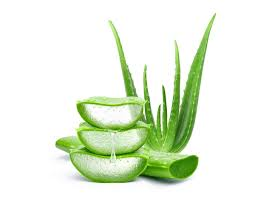
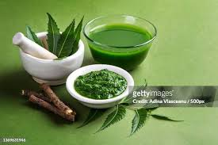

Details
Herb 1

Aloe vera is a succulent plant species with thick, fleshy leaves that belong to the genus Aloe. It's been used for centuries for its medicinal properties, primarily in traditional medicine systems like Ayurveda, Chinese medicine, and various folk remedies. Here's some information about aloe vera as a herbal medicine:
1.Skin Benefits: Aloe vera gel is perhaps most famous for its skin-soothing properties. It's commonly used to alleviate sunburn, minor burns, cuts, and wounds due to its cooling and moisturizing effects. The gel contains compounds that possess anti-inflammatory, antioxidant, and antibacterial properties, which can aid in wound healing and reducing inflammation.
2.Moisturizer: Aloe vera gel is a popular ingredient in many skincare products like lotions, creams, and moisturizers due to its hydrating properties. It helps to lock moisture into the skin without leaving it feeling greasy, making it suitable for all skin types, including oily and acne-prone skin.
3.Treatment for Skin Conditions: Beyond sunburn relief, aloe vera is used to alleviate symptoms of various skin conditions such as psoriasis, eczema, and acne. Its anti-inflammatory properties can help reduce redness, swelling, and itching associated with these conditions.
4.Digestive Health: Aloe vera juice, derived from the inner gel of the plant's leaves, is consumed orally for its potential digestive benefits. It's believed to have a soothing effect on the digestive tract, helping to alleviate symptoms of acid reflux, irritable bowel syndrome (IBS), and other gastrointestinal issues. However, it's important to use aloe vera juice cautiously and in moderation, as it can have laxative effects in high doses.
6.Immune System Support: Aloe vera contains various vitamins, minerals, and antioxidants that may help support the immune system. It's rich in vitamin C, vitamin E, and other compounds that can help combat free radicals and boost overall immunity.
7.Oral Health: Some people use aloe vera juice as a mouthwash or toothpaste ingredient due to its purported antibacterial and anti-inflammatory properties. It's believed to help promote oral health by reducing plaque buildup, soothing gum inflammation, and freshening breath.
Potential Anticancer Properties: Some studies have suggested that certain compounds found in aloe vera may have anticancer effects. However, more research is needed to fully understand the mechanisms and potential applications of aloe vera in cancer prevention and treatment.
While aloe vera offers numerous potential health benefits, it's essential to use it cautiously and consult with a healthcare professional, especially when consuming it orally or applying it to open wounds or broken skin. Additionally, individuals with allergies to plants in the Liliaceae family (such as onions, garlic, and tulips) may be sensitive to aloe vera and should use it with caution.
Herb 2

Neem (Azadirachta indica) is a tree native to the Indian subcontinent and is often referred to as the "wonder tree" or "village pharmacy" due to its wide array of medicinal properties. It has been used for centuries in traditional Ayurvedic medicine and other traditional healing systems. Here's some information about neem as a herbal medicine:
1. **Antibacterial and Antifungal Properties**: Neem contains compounds such as nimbin, nimbidin, and gedunin, which have potent antibacterial and antifungal properties. Neem extracts and oil are used topically to treat various skin infections, including acne, eczema, and fungal infections like athlete's foot.
2. **Anti-inflammatory Effects**: Neem has strong anti-inflammatory properties, which can help alleviate inflammation associated with skin conditions like psoriasis and dermatitis. It can also be used to soothe irritated skin and reduce redness and swelling.
3. **Antioxidant Activity**: Neem is rich in antioxidants such as flavonoids, carotenoids, and vitamin E, which help protect cells from damage caused by free radicals. Antioxidants also play a role in maintaining overall health and may contribute to neem's ability to support the immune system.
4. **Oral Health Benefits**: Neem twigs have been traditionally used as toothbrushes due to their antimicrobial properties. Neem extract is also found in some oral care products like toothpaste and mouthwash, where it can help fight bacteria that cause gum disease, tooth decay, and bad breath.
5. **Antiparasitic Properties**: Neem has been traditionally used to treat parasitic infections, including malaria and intestinal worms. Compounds found in neem leaves and seeds have been shown to exhibit antiparasitic activity against a variety of parasites.
6. **Supports Liver Health**: Neem is believed to support liver health by promoting detoxification and protecting the liver from damage caused by toxins and free radicals. This may be attributed to its antioxidant properties and ability to enhance liver function.
7. **Insect Repellent**: Neem oil is a natural insect repellent and insecticide. It's effective against a wide range of pests, including mosquitoes, fleas, ticks, and bedbugs. Neem-based insect repellents are considered safer alternatives to synthetic chemical repellents.
8. **Wound Healing**: Neem possesses wound-healing properties and can aid in the healing process of minor cuts, wounds, and abrasions. Its antibacterial and anti-inflammatory properties help prevent infection and promote tissue regeneration.
9. **Anticancer Potential**: Some studies suggest that neem extracts may have anticancer properties, including the ability to inhibit the growth of cancer cells and induce apoptosis (programmed cell death). However, more research is needed to fully understand the mechanisms and potential applications of neem in cancer prevention and treatment.
Neem is generally considered safe for topical use, but it's important to dilute neem oil properly to avoid skin irritation. When taken internally, neem should be used cautiously and under the guidance of a healthcare professional, as high doses may have toxic effects. Pregnant or breastfeeding women and individuals with pre-existing medical conditions should consult with a healthcare provider before using neem medicinally.
Herb 3
Turmeric (Curcuma longa) is a bright yellow-orange spice derived from the rhizome (underground stem) of the turmeric plant, which belongs to the ginger family. It has been used for centuries in traditional medicine systems such as Ayurveda and Traditional Chinese Medicine for its numerous health benefits. The primary bioactive compound responsible for many of its medicinal properties is curcumin. Here's some information about turmeric as a medicine:
1. **Anti-inflammatory Properties**: Curcumin, the main active ingredient in turmeric, has potent anti-inflammatory effects. It can help reduce inflammation in the body by inhibiting the activity of inflammatory enzymes and molecules. Chronic inflammation is linked to various diseases such as arthritis, heart disease, and cancer, and turmeric may help alleviate symptoms associated with these conditions.
2. **Antioxidant Activity**: Turmeric contains powerful antioxidants that help neutralize harmful free radicals and prevent oxidative damage to cells and tissues. Antioxidants play a crucial role in protecting against chronic diseases, supporting overall health, and slowing down the aging process.
3. **Pain Relief**: Turmeric has analgesic properties and is often used to alleviate pain and discomfort associated with conditions such as arthritis, joint pain, muscle soreness, and menstrual cramps. Its anti-inflammatory effects contribute to its pain-relieving properties.
4. **Digestive Health**: Turmeric has long been used to support digestive health. It can help improve digestion, reduce bloating and gas, and alleviate symptoms of digestive disorders like indigestion and irritable bowel syndrome (IBS). Turmeric may also stimulate bile production, which aids in fat digestion.
5. **Cardiovascular Health**: Some research suggests that turmeric may benefit heart health by improving endothelial function, reducing inflammation, lowering cholesterol levels, and preventing the formation of blood clots. These effects may help reduce the risk of heart disease and other cardiovascular conditions.
6. **Brain Health**: Curcumin has been studied for its potential neuroprotective properties and its ability to cross the blood-brain barrier. It may help improve cognitive function, protect against age-related cognitive decline, and reduce the risk of neurodegenerative diseases such as Alzheimer's disease and Parkinson's disease.
7. **Immune Support**: Turmeric may help support the immune system by enhancing the activity of immune cells and promoting overall immune function. Its antioxidant and anti-inflammatory properties also contribute to its ability to support immune health and reduce the risk of infections.
8. **Skin Health**: Turmeric is used in various skincare products for its potential benefits for skin health. It may help reduce acne, lighten dark spots and scars, improve skin elasticity, and promote a healthy, radiant complexion.
While turmeric offers numerous potential health benefits, it's important to note that the bioavailability of curcumin, the active compound in turmeric, is relatively low. Consuming turmeric with black pepper, which contains piperine, can enhance the absorption of curcumin in the body. Additionally, turmeric supplements are available in various forms, including capsules, extracts, and powders, which may provide higher concentrations of curcumin than turmeric powder used in cooking. As with any supplement or herbal remedy, it's advisable to consult with a healthcare professional before starting turmeric supplementation, especially if you have any underlying health conditions or are taking medications.